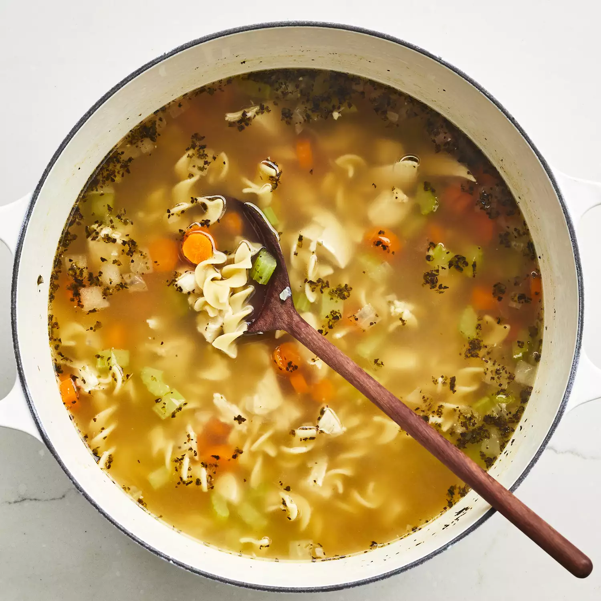

Easy Chicken Noodle Soup

Ingredients:
1 tablespoon butter
½ cup chopped onion
½ cup chopped celery
4 (14.5 oz) cans chicken broth
1 (14.5 oz) can vegetable broth
1/2 pound chopped cooked chicken breast
1 1/2 cups egg noodles
1 cup sliced carrots
1/2 teaspoon dried basil
1/2 teaspoon dried oregano
Salt and ground black pepper to taste
Instructions:
Melt butter in a large pot over medium heat. Add onion and celery and cook until just tender, about 5 minutes.
Add chicken broth, vegetable broth, chicken, egg noodles, carrots, basil, oregano, salt, and pepper. Stir to combine and bring to a boil.
Reduce heat and simmer for 20 minutes. Then it is ready to serve.
Copy Recipe
Print Page
Go Back